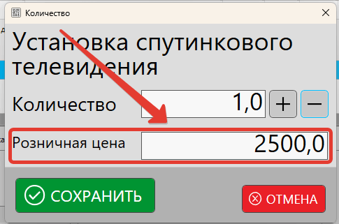

Реализация товаров (продажа) – одна из базовых возможностей кассовой программы. Продажа подразумевает под собой передачу покупателю (клиенту) товаров или оказание услуг и взимание оплаты. Факт совершения продажи фиксируется в программе в журнале продаж, а для покупателя печатается кассовый (фискальный) чек.
Реализация товаров и услуг в кассовой программе
На примере рассмотрим процесс проведения продажи в программе GBS.Market в режиме "Магазин/склад". Процесс продажи осуществляется на главной форме программы.
Окно продаж кассовой программы
Полезные материалы
Важно!
Перед тем, как осуществлять продажу товаров, необходимо, чтобы товары были добавлены в каталог и поставлены на остаток, например, через поступление.
Так же имеет смысл проверить настройку способов оплаты, например, если предусмотрены платежи с помощью банковских карт или другими способами.
Часть действий при продаже, например:
- изменение количества
- установка скидки
- удаление позиции из чека
могут быть ограничены в настройках прав доступа для сотрудников в разделе Файл – Настройки – Сотрудники.
Полезные материалы
Добавление товаров в чек (корзину)
Для выполнения продажи обязательным действием является добавление товаров в чек (корзину). Добавить товары можно несколькими способами, описанными ниже.
Сканирование штрихкода товара
Добавление товаров в чек по штрихкоду является самым удобным и быстрым способом. Для добавления товара по штрихкоду необходимо, чтобы штрихкод с этикетки товара был внесен в карточку товара в программе.
Отсканируйте штрихкод, нанесенный на товар, в главном окне программы в поле "Поиск".

Информация
- Если в каталоге товаров с таким штрихкодом будет найдено только одно совпадение, то товар будет сразу же добавлен в чек.
- Если будет найдено больше одного совпадения – программа отобразит форму поиска товаров, где потребуется выбрать конкретную позицию.

Полезные материалы
Сканирование весового штрихкода (с PLU кодом)
GBS.Market поддерживает расшифровку весовых штрихкодов, которые формируются в процессе фасовки или на весах с печатью этикеток.
Из весового штрихкода программа получает PLU-код товара и его количество и добавляет такой товар в чек.
Полезные материалы
Поиск товара по названию (артикулу и т.п.)
Если у товара нет штрихкода, он поврежден или необходимо добавить в чек услугу – можно воспользоваться ручным поиском. Для поиска введите название товара (артикул, код или значение другого поля) в строке поиска или нажмите кнопку "поиск" на главной форме программы, чтобы открыть окно поиска.
В окне поиска выберите один или несколько товаров, которые нужно добавить в чек. Вы можете кликнуть дважды на выбранном товаре, а если их несколько – нажать "Добавить".
Настройка полей, по которым происходит поиск и возможность поиска по цене, остатку и другим параметрам происходит в окне поиска.
Полезные материалы
Добавление избранных (быстрых) товаров
Товары или услуги, которые чаще других продаются, можно добавить в список избранных для быстрой продажи без необходимости ручного поиска. Такие товары могут быть отображены на главной форме на отдельной панели.
Полезные материалы
Выбор избранного товара из списка
Нажмите на кнопку "избранные товары", чтобы выбрать из списка товар, который необходимо добавить в чек. Дважды кликните на него для добавления.
Добавление товаров из панели избранных
Если в настройках программы включено отображение избранных товаров под корзиной, то добавить такие товары можно одним кликом на нужный товар.
Выбор записи остатка
В ряде случае программа может запросить выбор конкретного остатка товара, например:
- у товара на остатке есть позиции с разной розничной ценой
- товар имеет модификацию "ассортимент"
- у товара есть остатки на разных складах
В открывшемся списке необходимо выбрать позицию, которая будет добавлена в чек.
Полезные материалы
Редактирование позиций в чеке
В процессе добавления товаров может потребоваться изменение таких параметров:
- количество товара в чеке
- стоимость услуги
- скидка на товар или услугу
- код маркировки товара
- комментарий к товару
Некоторые свойства, например, скидка, могут быть установлены для нескольких выбранных товаров. Такие, как код маркировки, может быть указан только для отдельной позиции.
Редактирование количества
При добавлении товара (услуги) в чек запрос ввода количества или цены может появиться автоматически в случаях:
- товар относится к типу "весовой"
- в карточке категории товара включена опция "запрашивать ввод количества"
Ручное изменение количества
Для редактирования количества товара в чеке дважды кликните на необходимую позицию. Так же можно выбрать несколько товаров и нажать кнопку "изменить количество".
В открывшейся форме введите продаваемое количество товаров.
Важно
Изменение количества товара в чеке для некоторых товаров может быть ограничено. Например, для товаров, подлежащих маркировке, изменение кол-ва чаще всего запрещено.
Получение количества с весов
Если к устройству, на которое установлена программа, подключены торговые весы и они указаны в настройках программы, то при добавлении весовых товаров будет запрошено значение веса с устройства.
При необходимости значение, полученное от весов, можно отредактировать вручную.
Полезные материалы
Расшифровка количества из весового штрихкода
Если товар был добавлен сканированием весового штрихкода, то значение количества такого товара будет установлено из указанного в штрихкоде.
Полезные материалы
Редактирование цены
Редактирование розничной цены происходит в форме ввода количества товара. Изменение цены возможно в случаях:
- в карточке категории редактируемого товара включена опция "свободная цена"
- редактируемая позиция относится к типу "услуга"
В остальных случаях изменение розничной цены недоступно.
Установка скидки на позицию в чеке
Ручное изменение скидки на позицию
Для установки скидки необходимо выбрать одну или несколько позиций в чеке (корзине) и нажать кнопку "скидка"
В появившейся форме можно указать:
- размер скидки в процентах
- сумму скидки
- цену со скидкой
- сумму со скидкой
При изменении одного из параметров остальные будут рассчитаны автоматически.
Автоматическая установка скидки на товары в чеке
В программе реализована дисконтная система, которая позволяет настроить автоматическую установку скидки по таким правилам, как:
- личная скидка покупателя
- скидка на день рождения
- скидка от суммы текущего чека
- скидка от суммы ранее сделанных покупок
- скидка по времени
- скидка в определенный день недели
- скидка в определенный день месяца
Если в текущий момент сработает несколько правил дисконта, то программа выберет наибольшую скидку. Скидки между правилами не суммируются.
Если значение скидки изменено вручную, то автоматическое правило на измененную позицию не будет применено.
Полезные материалы
Добавление комментария к позиции
Ручное добавление комментария
Для любой позиции в чеке может быть добавлен комментарий. Например, это может быть серийный номер продаваемого оборудования. Комментарий, при необходимости, может быть распечатан в чеке. Нажмите кнопку "Комментарий".
Если в карточке категории добавляемого товара включена опция "запрашивать комментарий", то окно ввода комментария будет открыто автоматически.
Ввод кода маркировки
Код маркировки для товаров, которые подлежат обязательной маркировке, вводится в виде комментария к товару. При добавлении маркируемого товара программа запросит код маркировки в момент добавления товара в чек.
Полезные материалы
Удаление позиции из чека
Если покупатель отказался от товара или позиция была добавлена в чек ошибочно, то ее можно удалить из списка, нажав соответствующую кнопку.
Идентификация покупателя
Продажа в кассовой программе GBS.Market может быть закреплена за покупателем. Закрепление продажи необходимо для:
- продажи товаров в долг
- накопления баллов или скидки в рамках программы лояльности
- возможности просмотра истории покупок
- отправка электронного чека на телефон или email
Полезные материалы
Ручное добавление покупателя
Добавить покупателя можно, включив опцию "покупатель" и в появившемся списке выполнить поиск контакта.
Если контакт не найден – можно создать нового, нажав на кнопку "добавить" и заполнить карточку контакта.
Идентификация покупателя по штрихкоду дисконтной карты
Если у покупателя в карточке контакта указан штрихкод дисконтной карты, то при сканировании этого штрихкода программа закрепит покупателя за продажей. Это быстрый способ идентификации покупателя без необходимости ручного поиска.
Сканировать штрихкод дисконтной карты необходимо в поле "поиск" на главной форме.
Для корректной работы поиска по штрихкоду дисконтной карты должны быть указаны префиксы в настройках сканера штрихкодов.
Обслуживание нескольких покупателей
Доступна возможность одновременного обслуживания нескольких покупателей. Если в настройках программы для опции "Кол-во корзин на главной форме" указано больше 1, то будет доступно переключение между чеками (корзинами).
Полезные материалы
Синхронизация контактов между торговыми точками
Доступна настройка синхронизации контактов (покупателей) между торговыми точками, в которых используется кассовая программа GBS.Market.
Полезные материалы
Ввод суммы платежа по чеку
Процесс ввода оплаты может отличаться в зависимости от настроек.
Оплата только наличными
В случае, когда другие способы оплаты не настроены, ввода суммы наличных выполняется в поле "Получено" на главной форме.
После ввода суммы будет рассчитана сдача.

Несколько способов оплаты
Если в программе настроено несколько способов оплаты, например:
- наличные
- картой
- безналично
или используется накопительная система, то программа отобразит окно для ввода сумм по способам оплаты.
В данном окне возможно использование в т.ч. смешанной (мультиоплаты) – т.е. оплаты несколькими способами сразу. Например, покупатель может оплатить часть наличными, часть картой, а часть баллами.
Запрос ввода суммы оплаты происходит после нажатия кнопки "ИТОГ" на главной форме.
Если настроено подключение к банковскому эквайринг-терминалу и корректно настроены способы оплаты, то программа передаст команду в терминал для оплаты картой.
Полезные материалы
Продажа в долг (частично или полностью)
Если общая сумма введенных платежей будет равна нулю или будет меньше, чем сумма всех товаров по чеку, программа предложит оформить такую продажу в долг.
При продаже в долг обязательна идентификация покупателя.
Полезные материалы
Печать чека и документов для продажи
Печать первичных документов
Для оформляемой продажи можно распечатать документы, нажав на "печатать доп. документ" на главной форме. Будет предложено выбрать один из установленных шаблонов.

По умолчанию доступны такие шаблоны, как:
- товарный чек
- накладная
- ТОРГ-12
- счет для оплаты
Печать документа возможна и после сохранения продажи из журнала продаж.
Полезные материалы
Печать кассового (фискального) чека
Печать чека в момент продажи зависит от параметров, указанных в настройках программы.
Внешний вид чека будет зависеть от типа подключенного устройства. Если устройство для печати чеков не указано – чек не может быть распечатан.
Чтобы чек был напечатан после завершения продажи, необходимо включить опцию "Чек" в панели "Печать".
В ряде случаев опция "чек" может быть установлена и недоступна для отключения, например, когда в настройках печати чека указано фискальное устройство (онлайн-касса), а продажи без чека запрещены.

Полезные материалы
Дополнительная форма выбора при печати
Если в настройках программы включена опция "Показывать форму подтверждения печати", то при нажатии кнопки "ИТОГ" будет предложен выбор для дополнительных действий.
При нажатии на кнопку "Отмена" в данной форме произведёт возврат в главное окно программы без сброса продажи.

Завершение продажи с печатью фискального чека
Если в качестве устройства для печати чека указан фискальный аппарат (онлайн-касса), то при нажатии на кнопку "Фискальный чек" на панели "Завершить продажу":
- продажа будет сохранена в фискальный накопитель онлайн-кассы
- произойдет печать фискального чека (если печать бумажного чека не отключена)
- продажа будет отправлена в ОФД (если связь с ОФД настроена)
- продажа будет сохранена в базу данных программы
В случае, если настроена отправка электронных чеков, программа запросит подтверждение на отправку чека покупателю.
Полезные материалы
Завершение продажи с печатью НЕфискального чека
Если в настройках программы включена опция "нефискальные операции", то будет доступна кнопка "нефискальный чек". При нажатии на нее:
- будет распечатан нефискальный чек
- продажа будет сохранена в базу данных программы
При печати нефискального чека:
- чек НЕ сохраняется в фискальный накопитель
- данные НЕ передаются в ОФД
Пример нефискального чека
Полезные материалы
Печать документа
При нажатии на кнопку "Напечатать документ" будет предложен выбор шаблона для печати сопутствующих документов, как описано в параграфе выше. Продажа при этом не будет завершена, необходимо будет выполнить действие из блока "Завершение продажи".
Отмена продажи
При нажатии кнопки "Отмена" на главной форме программы будет:
- очищен список товаров
- покупатель будет сброшен
Просмотр продаж
Информация о сохраненных продажах отображается в журнале продаж. Общую статистику о продажах можно увидеть в:
- сводном отчете
- отчете продавца
- мастере отчетов
Так же на вкладке "история" в карточке товара можно увидеть записи о факте продажи товара. А в карточке продажи отображается подробная информация о товарах, платежах и возвратах.
Продажи, оформленные в долг, отображаются в разделе Контакты – Должники.